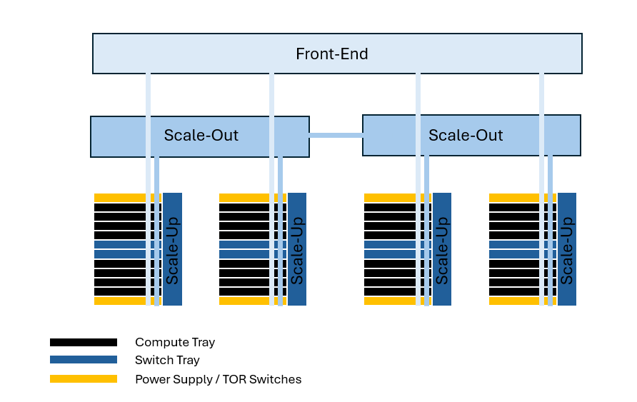
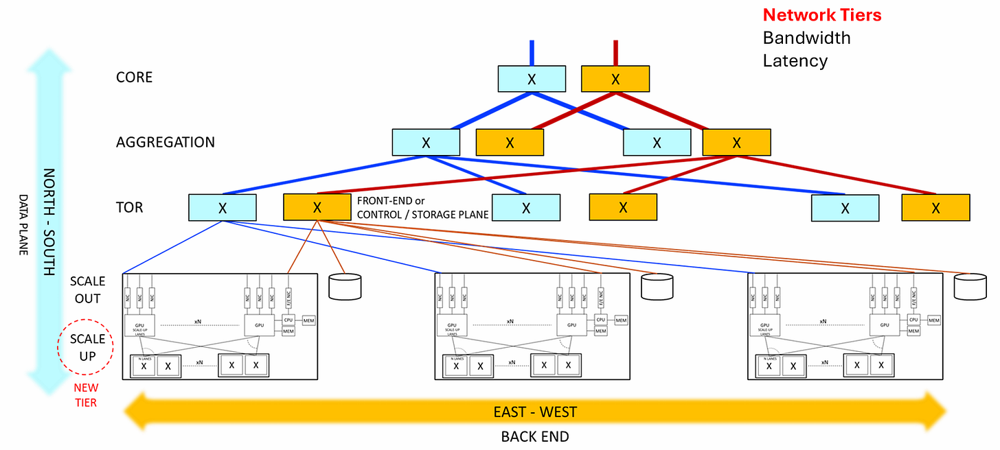
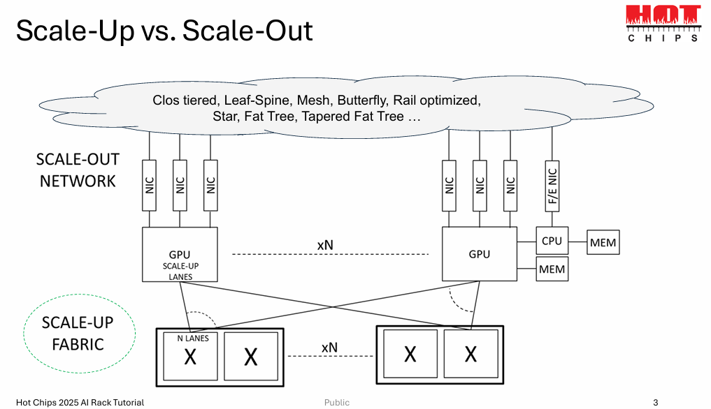
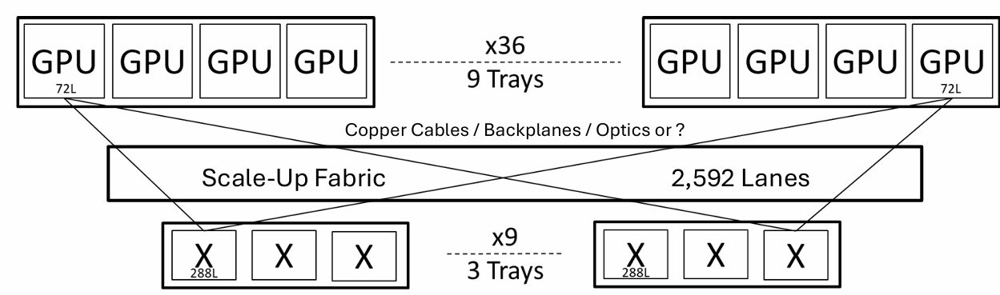
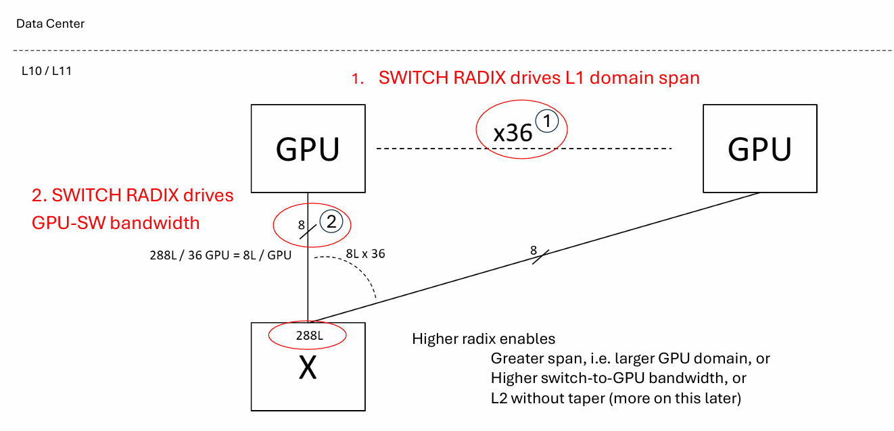
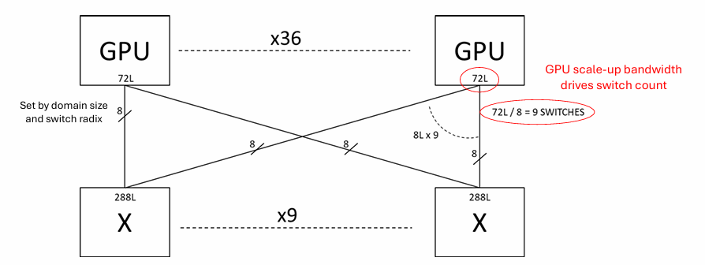
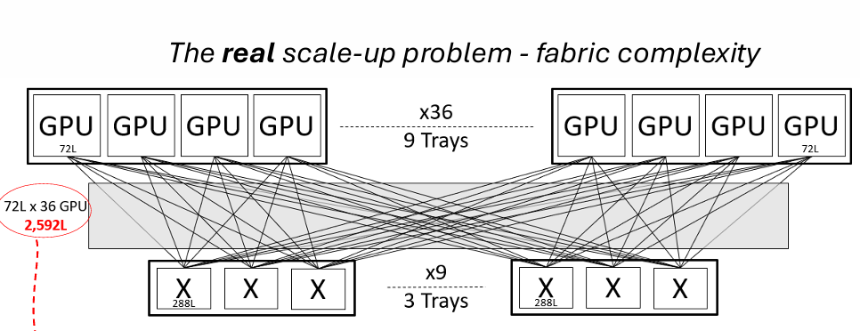
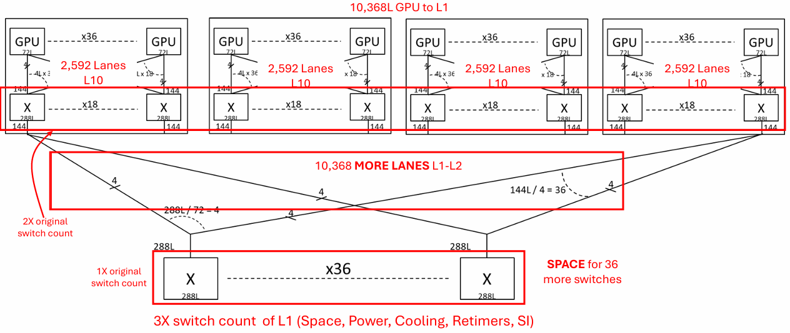
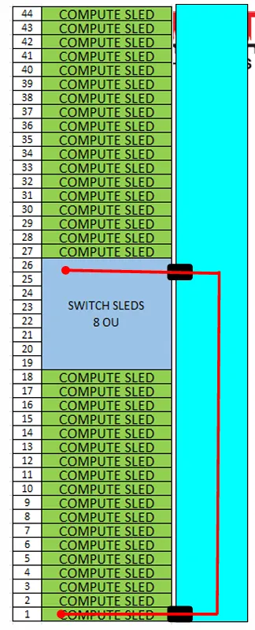

这篇文章为AI机架架构的高速互连提供系统上下文，为Hot Interconnects和Hot Chips 2026做准备。
在第1部分，我概述网络架构：前端与Scale-Out：传统云计算的干活主力；为什么Scale-up：张量并行的海量带宽；网络术语（物理硬件集成层级、交换机Radix）；Fabric复杂度的权衡（协同设计挑战、机架架构与信号完整性）。
计算并行和几个案例研究将在第2部分覆盖。这篇文章免费，大体基于Hot Chips 2025网站上可以找到完整内容的教程。另外，Hot Interconnects本周举行，免费且仅限在线。如果你参加，我鼓励你把这篇文章传开，作为理解正在发生什么的参考指南。
不同于大多数自上而下讲机架系统的人，我采取自下而上的方法：先写底层子系统，从芯片级到板级再到系统级。这些包括高速光/电通信、混合信号IC、电源、先进封装、AI加速器基础等深度文章。大多数底层技术对局外人是抽象的，因为它们在技术层级深处，不同专业领域的人并不总是互相交流。
然而，随着机架集成越来越紧密，设计其中的组件和子系统需要对跨抽象层级的整个机架架构有工作知识。这包括理解相邻技术领域的历史背景和跨域权衡，以有效地协同设计。
如果你读我的深度文章，你会注意到我总是谈权衡，这样你不仅知道架构「是什么」（比如电源800→48→12→1V），还理解它「为什么」到达那里、以及「为什么不是」别的样子。这就是我认为所有工程师都应拥抱的协同设计工程本质。我也认为，作为非工程师的投资者，理解工程权衡很重要，这样你能预测风往哪吹、相应地配置资本。
我一直在找有工程背景、能深入覆盖这类子系统、把它们在全局中扮演的角色提升的作者。我发现这很有挑战性，因为似乎AI基础设施里决定资本流向的写作要么只有宏观、要么技术太深。
贯穿本文，我链接了几个深度文章，如果你想深入我讨论的话题。一如既往，如果你是专家并发现错误，请联系我，以便我修复。
历史上，大多数服务器机架利用scale-out和前端网络处理用户与服务器之间的数据流量。

前端网络连接数据中心里所有机架。它负责管理连接外部客户端、企业存储和管理系统到内部计算节点的南北向流量。
前端网络用3层分层网络模型处理南北向流量，类似于邮政系统。当大多数网络流量是南北向（即用户到服务器）时这很好用，比如用户从服务器请求网页。
前端网络由以下三层组成：
机架顶部（TOR）：数据进入服务器的第一个入口点：数据经过Tier 1交换机，它们直接连到GPU。
聚合（Aggregation）：多个TOR交换机连接的区域枢纽：这些通常位于独立网络配线间或中央配电架。数据通过Tier 2交换机聚合，在跨机架或集群pod扩展时连接多个Tier 1 TOR交换机。
核心（Core）：在主要网络块之间移动海量数据而不造成瓶颈：它优化最大数据流量吞吐，不运行可能拖慢流量的安全协议。
前端网络用Ethernet或InfiniBand交换机移动数据。AI中使用的几个例子：
InfiniBand：NVIDIA Quantum-X800：最高性能、端到端800 Gb/s网络，为大规模AI设计。
Ethernet：Broadcom Tomahawk 5：51.2 TBps高性能数据中心交换机芯片。
现代微服务如Amazon和Netflix把数据移动转向以东西向（服务器到服务器）为主，这需要高带宽scale-out架构。
Scale-out网络本质是水平扩展：通过高带宽分布式交换fabric互连成百上千个独立计算节点来扩展数据中心容量。这样多个计算节点可以在单个工作负载上协同。
Scale-out主要用扁平leaf-spine拓扑，通过网络接口卡（NIC）连到GPU。这些NIC把GPU数据转换成网络数据包，发送到scale-out网络交换机。
AI计算强烈偏好并行来计算海量MAC操作。计算并行需要大量数据移动：训练时分布每次反向传播后的更新权重，以及聚合中间结果。这些将在第2部分深入讨论。

Scale-out中并行计算的问题是数据移动对延迟高度敏感，GPU不断彼此「广播」中间数学结果。Scale-out里的SW协议引入不必要的微秒级数据路由延迟和数据包丢失，让同一集群的GPU A和B通信。这对延迟敏感的推理工作负载很糟。
因此，scale-up作为传统3-tier和scale-out层级之下的新高带宽网络「层」出现。
Scale-up域只有一份工作，而且只有一份：
让多个GPU像一个共享内存的巨大虚拟GPU。
Scale-up交换机低延迟，约 ~100纳秒，相比scale-out的 ~1微秒。没有专门的scale-up，所有数据会堵住scale-out网络、花很长时间完成任务。

描述scale-up fabric技术有很多营销术语。几个例子：NVIDIA NVLink / NVLink Fusion、Celestial AI Photonic Fabric、Broadcom SUE（Scale-up Ethernet）、Ultra Accelerator Link（UALink）。
由于涉及海量计算并行，大多数新市场参与者和创新技术（如光学和448Gbps）在scale-up域优化性能。大多数高带宽通信/计算希望尽可能被包含在scale-up域。一个新趋势，Mixture of Experts，因稀疏、不可预测的数据模式和专家分布式也想在scale-out域通信，进一步施压scale-up。
理解和优化scale-up会成就或毁掉一个AI集群，因此值得特别关注。
现在定义两个重要网络概念。

在服务器机架系统中，有一个用L1-L12命名方案组织服务器制造集成层级各组件的标准化方式。L1-5指板卡和外箱组装中的层，L6-9指板卡和组件贴装，L10-12指系统、机架和集群层。
在AI机架的系统上下文中，我们关心三个最高层级：
L10（系统/托盘级）：包含GPU和本地板卡交换机的单个物理机箱或滑架。
L11（机架级）：容纳多个L10托盘的完全布线的机架框架。
L12（集群/多机架级）：通过scale-out光网络（InfiniBand / RoCE交换机）跨数据中心地板连接多个L11机架。
在switch tray中，switch radix指集成到单个网络交换机芯片上的物理输入输出端口（或高速链路）总数。在现代GPU集群，这个radix是288L总量，用高密度SerDes交换机架构连接36个GPU。每个连接通常有8条lane，这是大多数高速网络接口和布线常用的。

Switch radix极其重要，因为它影响系统能处理的并行量、进而影响数据带宽。Switch radix给网络架构引入许多约束，包括：
L1域跨度：并行GPU的总数。
GPU-SW带宽：每个GPU能处理的lane数。1.8 TB/s（224 GB/s聚合吞吐）是标准，但加更多lane可以增加。
交换机芯片的例子：NVIDIA NVSwitch 4 ASIC（传统NVLink 5）、NVIDIA Quantum-X CPO Engine（InfiniBand/光子学）、Broadcom Tomahawk Ultra / Scale-Up Ethernet（SUE）ASIC、Baya Systems NeuraScale Fabric Chips。
有几个基本约束决定能连接GPU的交换机数量。



Switch radix支配域大小和可连接的GPU数。这里我们注意到36个GPU、每个8 lane、连到288L交换机。每个GPU最多72 lane连到9个交换机。
多交换机是因为radix跨度和SerDes的shoreline限制。你不能构建一个2,592端口连到每个GPU的单一mega-switch ASIC。
用这个配置扩展性能有几个权衡，选项包括：
增加交换机数量：可以增加带宽，但加太多托盘会挤占计算托盘的数量。
增加switch radix：可以支持更多GPU，但这需要更多SerDes，受shoreline限制约束。
结果，scale-up集群限制交换机数量，接受在多少GPU同时互相通信上有带宽限制。
此外，scale-up集群里因跨域交互还有几个协同设计挑战，包括：
机械：机架重量、可制造性、良率、多少lane能物理退出交换机和计算滑架。
热/冷却：更吃电的GPU挤在更紧的区域，需要把热移出机架，液冷需要失效保护机制。
电源：母线尺寸、安全。
信号完整性：受机械形式和线缆长度影响。长信号路径需要retimer，增加额外电源、机械和热考虑。
为进一步增加并行，有几个方法用L1和L2交换机扩展多个「域」。由于每个scale-up交换机有288L，并行四个scale-up域会爆炸式增加处理每个可能GPU-GPU组合所需的交换机复杂度。有几种替代拓扑如L1.5，更多信息在幻灯片里。
所有这些交换机都必须放进机架，同时容纳交换和计算。

在传统web服务器机架，交换机位于机架顶部（ToR）。为最小化AI数据中心机架的铜缆距离，第19-26排预留给交换机，其余上下方放计算和电源/外设托盘。随着数据速率增加、铜缆在更长距离面临几个挑战，这改善信号完整性。
正如许多人注意到的，铜缆正到达物理速度和长度极限，这让光学成为高速低延迟互连如此有吸引力的选项。
设计scale-up网络时，经验法则是「能用铜则用铜，必须才用光」。可插拔光收发器（OSFP / QSFP-DD）用于scale-up昂贵且耗电，一般最小化使用，尽管投资者渴望更多。
随着数据速率增加，在PCB内部用铜缆越来越有挑战性，因此共封装光学（co-packaged optics）正成为潜在扩展方案。
Scale-up在AI计算性能中至关重要。一切：从数据带宽、延迟、机械、热：都是AI性能的因素。
在第2部分，我将讨论四种并行形式，包括Mixture-of-Experts，以及几个机架和模型案例。敬请期待。
参考：https://www.siliconcodesign.com/p/a-system-level-overview-of-scale